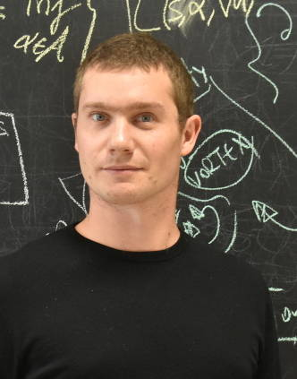

I am an associate researcher within the
Chair of Computational Mathematics at Fundación Deusto in Bilbao.
I got my PhD in 2016 from the University of the Basque Country, under the supervision of
Enrique Zuazua.
I am an expert in several aspects of applied and computational mathematics. My current research interests cover a wide spectrum of different fields, including but not limited to:
- PDE analysis and numerics.
- Control theory, optimal control and optimization.
- Mathematical aspects of machine learning.
- Mathematical and computational tools for the model, stability, and control of power systems.
- Different classes of non-local and fractional models.
- Mathematical and computational tools for the model, stability, and control of power systems.
CONTACT:
Umberto Biccari
Chair of Computational Mathematics
Fundación Dusto
Avenida de las Universidades 24
48007, Bilbao, Spain
e-mail: u.biccari@gmail.com